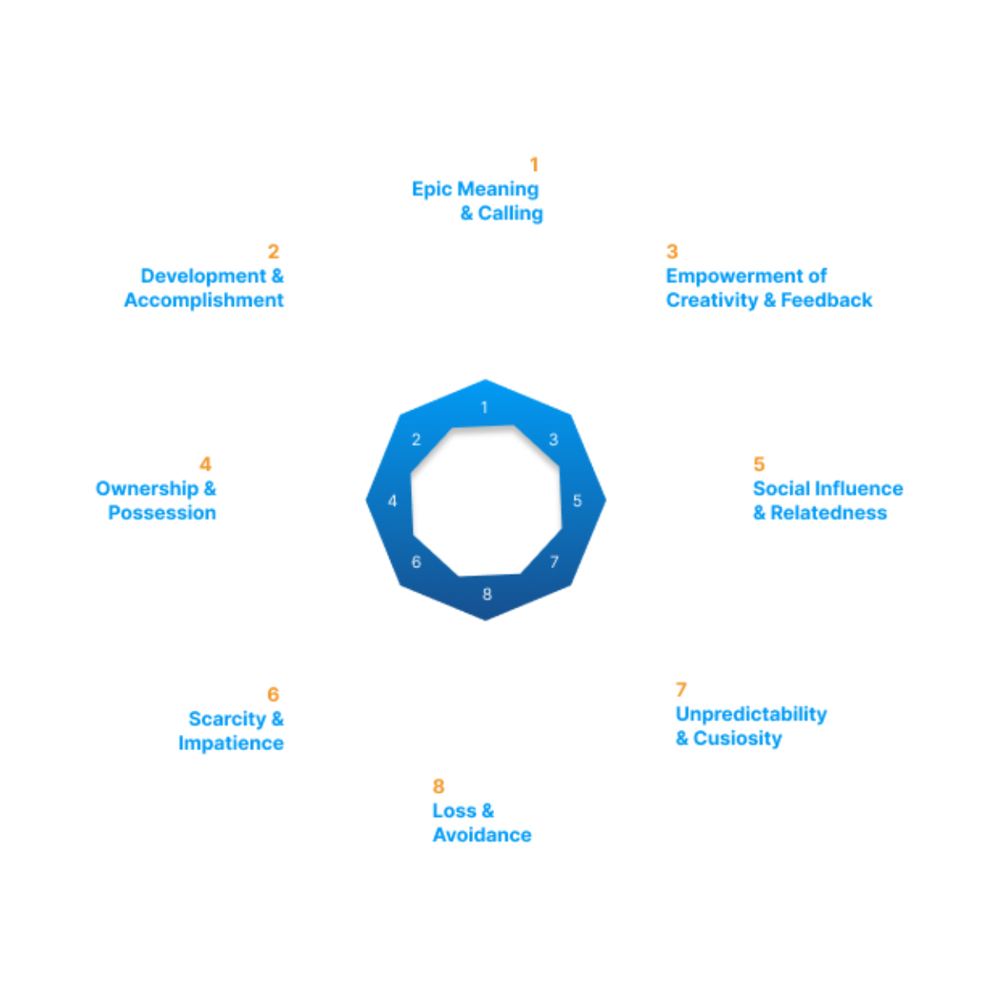
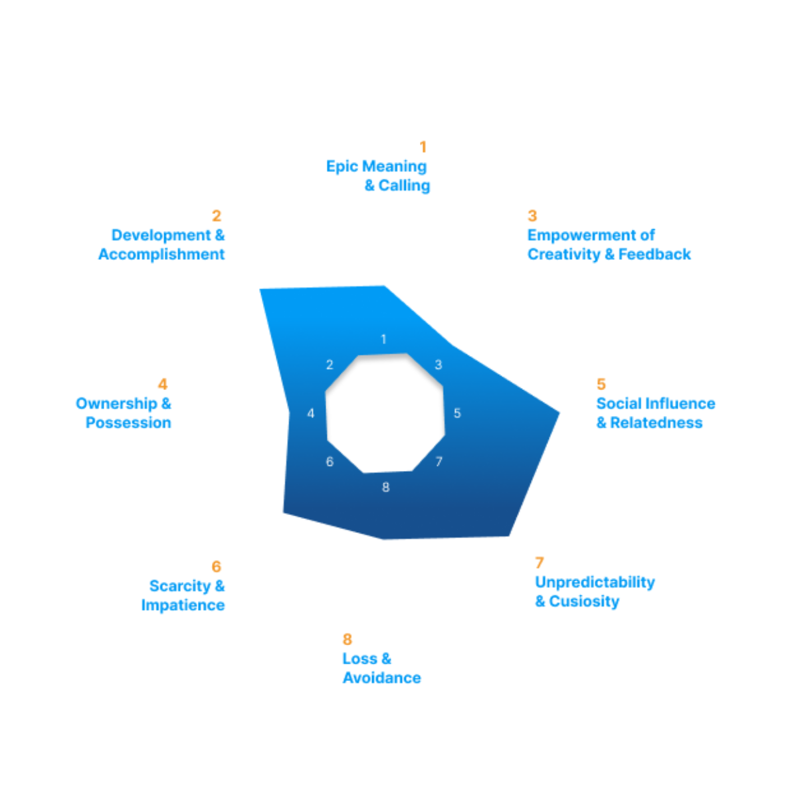

Integrantes do Grupo:
| Mat. | Nome | Responsabilidade |
|---|---|---|
| 231027032 | ARTHUR EVANGELISTA DE OLIVEIRA | A gamificação |
| 232001649 | DAVID WILLIAM LEMOS FERREIRA | Análise do documento |
| 232013980 | GABRIEL ANDRADE MAGIOLI | A gamificação |
| 231038644 | GIOVANA DE SOUZA FONTES | A gamificação |
| 222008691 | GUSTAVO RIBEIRO LINHARES | A gamificação |
| 221022604 | JOÃO VICTOR DA SILVA BATISTA DE FARIAS | Análise do documento |
| 231035455 | LETICIA MARIA DE JESUS LOPES | A gamificação |
| 231026886 | SOPHIA SOUZA DA SILVA | Análise do documento |
| 231011865 | WILLIAN WAGNER XAVIER RAMOS DA SILVA | A gamificação |
| 231038303 | YAN MATHEUS SANTA BRIGIDA DE AGUIAR | A gamificação |
Histórico de Revisões
| Data | Versão | Descrição | Autor |
|---|---|---|---|
| 02/12/2024 | 0.1 | Primeira versão do documento | Arthur, Gabriel, Giovanna, Gustavo, Leticia, Willian, Yan |
Objetivo do documento
Esse documento tem como objetivo apresentar de maneira detalhada a abordagem técnica da gamificação da aplicação. Esse documento usa como base o “relatório do formulário da gamificação”, no qual foi definido os tipos de players que serão levados em consideração na construção da aplicação, seguindo os estudos da ferramenta Hexad.
Octalysis
Para a elaboração da gamificação, foi utilizado o framework Octalysis, desenvolvido por Yu-Kai Chou, que tem como objetivo modificar os sentimentos e comportamentos do usuário da gamificação. O framework apresenta oito “Core Drives”, que funcionam como ferramentas essenciais. São eles:
-
Epic Meaning & Calling (Significado Épico & Chamado)
O primeiro Core Drive baseia-se em criar uma jornada épica para o usuário, fazendo-o sentir-se parte de uma história maior e como alguém escolhido para participar de algo significativo. Esse Core Drive incentiva o jogador a engajar-se efetivamente em atividades ou missões, promovendo imersão na jornada construída. Isso impulsiona persistência, criatividade e dedicação.
-
Development & Accomplishment (Desenvolvimento & Realização)
O segundo Core Drive motiva o jogador ao permitir que ele visualize seu progresso e perceba seu crescimento dentro da gamificação. Aqui, o usuário sente-se estimulado por suas conquistas, ganhando confiança para realizar novas ações e desafios.
-
Empowerment of Creativity & Feedback (Empoderamento da Criatividade & Feedback)
Esse Core Drive manifesta-se pela liberdade e criatividade oferecidas ao usuário ao explorar novas possibilidades e experiências dentro da aplicação. Ao permitir que os usuários tomem decisões próprias, eles se tornam participantes ativos da gamificação. Isso cria um ambiente rico em feedbacks constantes, provenientes de outros jogadores ou do próprio sistema, incentivando a melhoria contínua. Esse ciclo de aprendizado motiva os jogadores a aperfeiçoar habilidades, buscar avanços e, consequentemente, engajar-se ainda mais na gamificação.
-
Ownership & Possession (Propriedade & Posse)
O quarto Core Drive está relacionado ao sentimento de posse desenvolvido pelos usuários à medida que progridem na gamificação, como ao colecionar troféus ou medalhas. Esse sentimento de "ser dono" de algo cria um vínculo emocional com os elementos da aplicação, levando a maior comprometimento e fidelização. O orgulho de ver suas criações ou conquistas crescerem ao longo do tempo potencializa a experiência do usuário e reforça sua conexão com a gamificação.
-
Social Influence & Relatedness (Influência Social & Pertencimento)
O Core Drive 5 aborda as interações entre os usuários da gamificação, relacionando-se com comportamentos influenciados pelo que outras pessoas pensam ou dizem sobre o usuário. Envolve aspectos sociais e psicológicos, estimulando tanto a competição saudável quanto a cooperação entre os jogadores. Essa dinâmica cria laços sociais, um sentimento de progresso e fortalece a comunidade da aplicação.
-
Scarcity & Impatience (Escassez & Impaciência)
Neste Core Drive, o desejo do usuário por algo difícil de alcançar torna-se uma motivação para que ele continue buscando esse objetivo. Ele oferece um senso de urgência e utiliza estratégias que exploram a escassez de recursos e a necessidade de decisões rápidas. Esse Core Drive intensifica o sentimento de recompensa e conquista, pois, em situações críticas e escassas, a recompensa torna-se mais gratificante. Além disso, desperta adrenalina e emoção, enriquecendo a experiência da gamificação.
-
Unpredictability & Curiosity (Imprevisibilidade & Curiosidade)
O Core Drive 7 sustenta o engajamento da gamificação através de surpresas e eventos aleatórios encontrados ao longo da jornada. Esses elementos, que podem ou não envolver sorte, motivam a curiosidade e a ansiedade do usuário para descobrir o que virá a seguir, afastando-o de situações previsíveis. Essa técnica mantém os jogadores engajados e comprometidos, desafiando-os a explorar estratégias criativas para lidar com o inesperado. No entanto, exige um balanceamento cuidadoso para evitar frustrações no usuário.
-
Loss & Avoidance (Perda & Prevenção)
Por fim, o último Core Drive envolve o medo do usuário de perder algo, conhecido como FOMO (Fear Of Missing Out). Nesse contexto, o jogador está disposto a fazer de tudo para proteger conquistas já alcançadas ou garantir oportunidades próximas de serem conquistadas. Essa técnica é eficaz para evitar a monotonia de sempre vencer na gamificação, tornando a jornada mais desafiadora e imprevisível. Além disso, promove a busca constante pelo objetivo final, incentivando a tomada de decisões estratégicas, a avaliação de riscos e o planejamento, sempre guiados pela criatividade e liberdade de cada jogador.
Core drives escolhidos
Com base nas análises dos tipos de jogadores utilizando a ferramenta Hexad, identificamos os principais Core Drives que guiarão a gamificação, conforme definido pela metodologia Octalysis. Eles são:
Social Influence & Relatedness (Influência Social e Pertencimento)
Core Drive número 5
Esse Core Drive é fortemente explorado por meio de mecânicas como o sistema de ranqueamento e títulos. Essas ferramentas não apenas incentivam a competição saudável, mas também proporcionam um senso de pertencimento, já que os usuários se veem como parte de um grupo com características ou conquistas em comum. Além disso, esses elementos ajudam a satisfazer a necessidade de reconhecimento e validação social, fundamentais para engajar os jogadores.
Development & Accomplishment (Desenvolvimento e Realização)
Core Drive número 2
A sensação de progresso é um elemento-chave dessa gamificação. Os usuários acompanham seu crescimento por meio do avanço no ranking, acúmulo de pontos e conclusão de missões. Essas ferramentas proporcionam uma experiência de desenvolvimento contínuo, mantendo os jogadores motivados e oferecendo um senso de realização a cada conquista.
Unpredictability & Curiosity (Imprevisibilidade e Curiosidade)
Core Drive número 7
A imprevisibilidade está integrada em diversas partes da experiência. Por exemplo, o jogador nunca sabe exatamente quantos pontos ganhará ao abrir um baú do tesouro ou quando será desafiado por outro jogador, com grande parte de seus pontos em jogo. Esses fatores criam uma dinâmica de surpresa e emoção, mantendo o engajamento dos usuários. Além de quebrar padrões e evitar o conformismo, a imprevisibilidade encoraja os jogadores a se manterem ativos e a buscarem constantemente melhorar seus resultados.
Radar Chart da gamificação
Através das ferramentas usadas na gamificação, foi elaborado um “Radar Chart”, um gráfico de proximidade da gamificação com os Core Drives da ferramenta Octalysis.


A gamificação
Tema: Pirata
Ferramentas essenciais
Aqui, as ferramentas obrigatórias na gamificação para ela funcionar da maneira adequada e atendendo as pesquisas feitas.
-
Perfil:
O perfil será a seção onde o usuário poderá visualizar o seu título no mundo dos piratas, a quantidade de ouros e joias que ele possui.
-
Pontuação:
A pontuação é representada por ouro, que é acumulado ao decorrer do progresso, seja pela finalização de odisseias, pela venda de artefatos ou pela vitória em desafios propostos por outros usuários.
-
Ranqueamento:
O sistema de ranqueamento é uma escala de classificação dos usuários, baseada em critérios ou métricas predefinidas. Sendo assim, os usuários são ranqueados quantitativamente em relação ao número de ouros obtidos, portanto, quanto mais ouros o usuário acumular, maior será a posição do usuário no ranque.
-
Aleatoriedade e Ganho de recompensas e missões:
Quando o usuário completa uma missão (a definir), ele ganha o direito de abrir um baú do tesouro. A aleatoriedade no ganho dessas recompensas dentro do baú funcionará através desses quesitos:
Variedade de Recompensas:
Ouro (Moedas): Usadas para subir no Ranking;
Joias: Recompensas mais raras usadas para desafiar outros usuários;
Itens especiais: Recuperar pontos perdidos em desafios, reduzir tempo disponível do adversário nos desafios e etc (a definir).
A aleatoriedade cria para o usuário uma sensação de expectativa ao abrir os baús, onde o momento de recompensa se torna mais emocionante para o usuário. Além disso, o usuário se sente mais motivado a completar as missões para receber os baús.
Ganho de Recompensas:
Sistema de pontuação e níveis: cada resposta vale uma quantidade base de 10 moedas (a definir).
Avaliação da Resposta: se a resposta for bem avaliada pelo usuário que perguntou, o aluno ganha moedas extras, 5 moedas (a definir). Dessa forma, o usuário será incentivado a dar respostas de maior qualidade, para ter melhores avaliações.
Joias: as joias podem ser encontradas em baús, juntamente com os artefatos.
- Títulos:
Os Títulos piratas são honrarias que refletem o progresso do usuário e seu impacto como tutor(a) em nossa aplicação.
Foram inspirados nas maiores aventuras marítimas, esses títulos não são apenas decorativos; eles simbolizam a dedicação, habilidade e conquistas do usuário.
Cada título representa uma etapa de sua jornada, desde os primeiros passos como um marujo “Pó de Estrela” até alcançar o último título como “Espírito dos Sete Mares”.
Os 10 títulos estarão visíveis para todos os usuários que participarem do ranking, destacando suas conquistas na plataforma. Para aqueles que optarem por não competir no ranking, os títulos aparecerão exclusivamente em seus perfis, junto com informações como a pontuação total e outros dados relevantes, permitindo que ainda possam acompanhar seu progresso de forma discreta. Assim, cada participante poderá escolher como deseja apresentar seu progresso na aplicação.
Como os títulos funcionam?
-
Ganhe ouros: Cada vez que o usuário responder a perguntas ou concluir missões, receberá ouros como recompensa, que são como moedas de recompensa por suas contribuições. São acumulativos e permitem que o estudante suba de título.
-
Suba na Hierarquia: À medida que acumula mais ouro, seu título será atualizado automaticamente, marcando sua evolução na comunidade. Quanto maior for o seu título, maior será o respeito e o reconhecimento dos outros usuários.
-
Missões e Desafios: Além de ajudar os outros, o estudante poderá completar missões específicas, como resolver um número estipulado de questões e participar dos desafios de nossa aplicação. Essas missões e Desafios concedem bônus de ouro e aceleram a progressão do estudante.
Os Títulos: A Hierarquia Pirata
-
Marujo “Pó de Estrela” ( 0-99 pontos):
Referência : Inspirado na magia do pó de estrela de Peter Pan .
Significado : Um aprendiz que está começando a voar nos mares do conhecimento.
Descrição : “Pequenos passos podem levar a grandes descobertas!”
-
Grumete do Pérola ( 100-199 pontos):
Referência : O Pérola Negra , o lendário navio de Piratas do Caribe .
Significado : Alguém que já faz parte da tripulação e tem potencial para crescer.
Descrição : "Você já embarcou no Pérola Negra. Agora, mostre seu valor!"
-
Navegador/a das Águas Místicas ( 200- 299 pontos ):
Referência : Moana , onde a água tem vida própria e escolhe os aventureiros dignos.
Significado : Um mentor que começou a dominar as "águas" do conhecimento.
Descrição : "As águas místicas confirmam seu valor. Continue navegando!"
-
Caçador/a do Baú Perdido (300 - 399 pontos):
Referência : O baú de Davy Jones, cheio de segredos e poder.
Significado : Alguém que busca tesouros de conhecimento para compartilhar.
Descrição : "O mapa do saber está em suas mãos. Ajude outros a encontrá-lo!"
-
Mestre/a das Quatro Correntes (400 - 499 pontos):
Referência : As quatro grandes correntes oceânicas que aparecem em Piratas do Caribe: A Vingança de Salazar .
Significado : Um mentor que equilibra conhecimento e liderança.
Descrição : "Você domina as correntes do aprendizado e guia outros com maestria."
-
Conquistador/a dos Ventos (500 - 599 pontos):
Inspiração : O domínio dos ventos em aventuras como Vikings , Avatar: A Lenda de Aang (controle do ar) e O Senhor dos Mares .
Significado : Um líder que utiliza os elementos a seu favor para conquistar objetivos e expandir territórios.
Descrição : "Você domina os ventos do aprendizado, navegando com habilidade e precisão."
-
Rainha/Rei da Ilha da Caveira (600 - 699 pontos):
Referência : A ilha misteriosa que aparece em várias histórias de piratas.
Significado : Representa domínio estratégico e visão ampliada.
Descrição : "Você conquistou a Ilha da Caveira. Todos os mapas agora levam a você!"
-
Guardião/ã do Diamante (700 - 799 pontos):
Referência : Sinbad e o Olho do Tigre , onde o diamante mágico é a chave para salvar o reino.
Significado : Um mentor que possui a joia rara do saber.
Descrição : "Você carrega o diamante do conhecimento, iluminando o caminho dos outros."
-
Capitão/ã Chapéu de Palha (800 - 899 pontos):
Inspiração: A tripulação do Chapéu de Palha, liderada por Luffy, que busca o One Piece e está sempre unida pelo laço da amizade.
Significado : Um líder que inspira confiança e lealdade, guiando a equipe com coragem e determinação.
Descrição : "Como Luffy, você liderou sua tripulação com coragem, sempre buscando o tesouro do conhecimento."
-
Espírito dos Sete Mares (900 - … pontos):
Inspiração : A lenda dos Sete Mares que permeia várias histórias, de Piratas do Caribe a Black Sails .
Significado : O título mais elevado, um mentor lendário cuja influência é sentida por todos.
Descrição : "Você transcendeu a jornada e agora é um espírito imortal, conhecido pelos sete mares como uma lenda viva."
Por que adotar um sistema de Títulos?
Nosso objetivo é criar um ambiente onde ajudar os outros seja tão recompensador quanto aprender. O sistema de títulos podem ajudar em vários campos:
- Motivação: ajuda com que os estudantes se engajem de forma ativa, transformando cada interação em uma oportunidade de crescimento.
- Reconhecimento: das contribuições do usuário à comunidade, dando-lhe o crédito que merece.
- Geração de pertencimento: pois cada título reflete não apenas a evolução individual, mas também o papel do estudante em algo maior: uma tripulação unida pelo saber.
- Inspiração: Seus títulos são um lembrete para a comunidade de que, com dedicação, qualquer um pode avançar e se tornar uma lenda nos caminhos do conhecimento.
Ferramentas não essenciais
Aqui, as ferramentas não obrigatórias, não é necessária a aplicação imediata dessas ferramentas para o perfeito funcionamento da gamificação, são ideias que complementam a aplicação podendo ser utilizadas no futuro.
- Sistema de Desafios
O sistema de desafios com gamificação permite que os usuários comprem desafios utilizando joias, uma das moedas virtuais do aplicativo. O funcionamento dos desafios é simples: o usuário pode desafiar outra pessoa valendo pontos. Se a pessoa desafiada aceitar, haverá um prazo de 3 dias, onde quem responder mais perguntas corretas, será o vencedor. Nesse caso, o vencedor recebe uma parcela dos pontos do perdedor, estipulada no ato de desafiar. Caso o desafiado recuse, o desafio é devolvido ao desafiante, sem nenhuma perda a nenhum dos dois.
Se o usuário não responder dentro de um tempo limite, o desafio é cancelado de forma automática, e devolvido para o desafiante. Caso queira, o cancelamento também pode ser feito de forma manual, sem nenhuma penalidade, desde que o desafio não tenha sido iniciado.
Após perder o desafio, o desafiante tem a chance de pedir uma revanche ao vencedor. A revanche é uma oportunidade do perdedor recuperar os pontos perdidos na batalha. Caso o vencedor aceite a revanche, é iniciado um novo desafio com as mesmas regras do desafio inicial. No entanto, caso o vencedor decida não aceitar a revanche, ele não sofrerá nenhuma penalização. A revanche é um benefício exclusivo do perdedor, então ele também não irá consumir um novo desafio, Isso incentiva os usuários a continuarem comprometidos sem que haja custos adicionais.
Para que haja maior controle no aplicativo, tem algumas limitações. Cada usuário só pode manter um desafio ativo por vez. Além disso, todos os usuários cadastrados recebem uma quantidade de desafios gratuitos. Após atingir esse limite, será necessário comprar utilizando as joias adquiridas. Para evitar que os usuários gastem todos os seus desafios com uma pessoa só, o aplicativo também estabelece que o mesmo desafiante só pode desafiar uma pessoa uma única vez por temporada. Incentivando a variedade de interações.
- Itens especiais
Apostas: O jogador poderá adquirir uma aposta utilizando joias. A aposta possui um fator de multiplicação, ou seja, para qualquer coisa, seja ela boa ou ruim, o jogador receberá em dobro.
Ofensiva: será um contador que possui um fator de multiplicação dos pontos do usuário. A cada determinada quantidade de dias seguidos contribuindo no aprendizado de outro usuário, o fator multiplicativo será aumentado, caso o usuário deixe de ajudar alguém durante 1 dia, esse fator multiplicativo será zerado e o usuário deverá reiniciar sua ofensiva.
- Artefatos:
Os artefatos são itens especiais que os usuários podem encontrar ao abrir baús de tesouro. Sua principal função é serem vendidos para acumular pontos, ajudando os usuários a subir no ranking.
Além disso, os artefatos podem ser guardados temporariamente, permitindo que o usuário adicione joias a eles. Essa mecânica oferece um diferencial estratégico, o valor final de um artefato aumenta significativamente quando ele é enriquecido com joias. Ou seja, um conjunto completo (artefato + joias) vale mais do que a soma dos valores individuais.
Cada artefato tem um design específico, assim como as joias que podem ser acopladas em posições pré-determinadas. Por exemplo, uma coroa encontrada em um baú. Se vendida sozinha, ela vale 200 ouros. Porém, ao adicionar uma joia, o valor sobe para 250 ouros. Com duas joias, o valor aumenta para 310 ouros, e com o máximo permitido de três joias, atinge 400 ouros.
Essa dinâmica estimula os pensamentos estratégicos do usuário, como vender o artefato imediatamente para obter ganhos rápidos, ou esperar para reunir mais joias e maximizar seu valor?